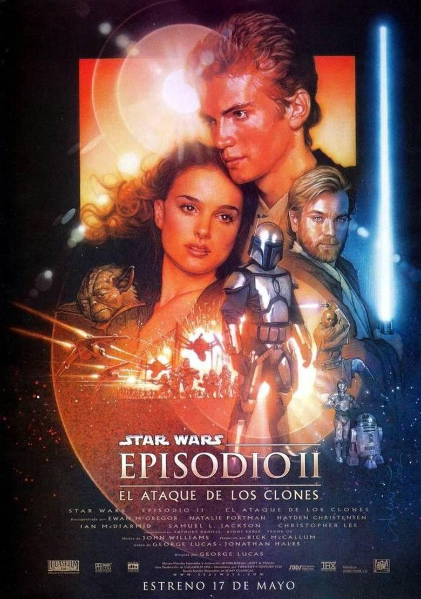

El Ataque de los Clones (2002)
En el Senado Galáctico reina la inquietud. Varios miles de sistemas solares han declarado su intención de abandonar la República. La reina Amidala regresa al Senado para conseguir un ejército que ayude a los caballeros jedi.
